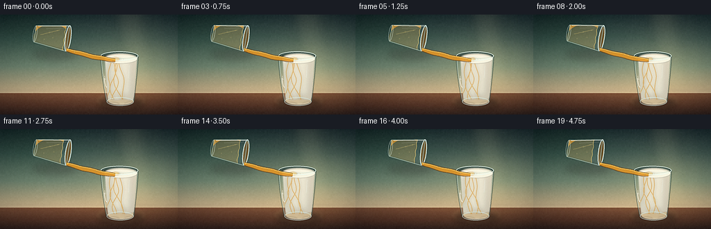
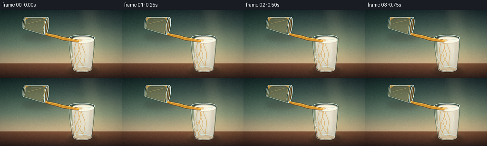

CODING AGENTS AS PIXEL WORLD MODELS
traex/DeepSeek-V4.1-Flash · phygen_137
点击播放 · 原生 RGB 像素
逐轮保存的候选
回放视频、检查图与代码变化。
每份候选均可单独播放。实际图片检查记录在下方工具轨迹中。
候选 01播放与检查图
点击播放 · 原生 RGB 像素


展开代码变化
--- 上一保存版本
+++ 本次保存版本
@@ -0,0 +1,556 @@
+from __future__ import annotations
+
+import math
+from pathlib import Path
+
+import numpy as np
+from PIL import Image, ImageChops, ImageDraw, ImageFilter
+
+import artifact_io
+
+
+CASE_DIR = Path(__file__).resolve().parent
+WIDTH = 256
+HEIGHT = 144
+FRAMES = 20
+FPS = 4.0
+SCALE = 4
+W = WIDTH * SCALE
+H = HEIGHT * SCALE
+
+
+def sc(value: float) -> float:
+ return value * SCALE
+
+
+def pt(point: tuple[float, float]) -> tuple[float, float]:
+ return sc(point[0]), sc(point[1])
+
+
+def points(values):
+ return [pt(value) for value in values]
+
+
+def rgba_layer() -> Image.Image:
+ return Image.new("RGBA", (W, H), (0, 0, 0, 0))
+
+
+def composite(base: Image.Image, layer: Image.Image, blur: float = 0.0) -> Image.Image:
+ if blur:
+ layer = layer.filter(ImageFilter.GaussianBlur(blur))
+ return Image.alpha_composite(base.convert("RGBA"), layer).convert("RGB")
+
+
+def mask_from_draw(draw_fn, blur: float = 0.0) -> Image.Image:
+ mask = Image.new("L", (W, H), 0)
+ draw_fn(ImageDraw.Draw(mask))
+ if blur:
+ mask = mask.filter(ImageFilter.GaussianBlur(blur))
+ return mask
+
+
+def layer_through_mask(layer: Image.Image, mask: Image.Image) -> Image.Image:
+ result = layer.copy()
+ result.putalpha(ImageChops.multiply(result.getchannel("A"), mask))
+ return result
+
+
+def vertical_gradient(stops: list[tuple[float, tuple[int, int, int]]]) -> np.ndarray:
+ ys = np.linspace(0.0, 1.0, H)
+ positions = np.array([item[0] for item in stops])
+ colors = np.array([item[1] for item in stops], dtype=np.float32)
+ channels = [np.interp(ys, positions, colors[:, channel]) for channel in range(3)]
+ rows = np.stack(channels, axis=1)
+ return np.repeat(rows[:, None, :], W, axis=1)
+
+
+def quadratic(p0, p1, p2, count=48):
+ result = []
+ for i in range(count + 1):
+ t = i / count
+ u = 1.0 - t
+ result.append(
+ (
+ u * u * p0[0] + 2.0 * u * t * p1[0] + t * t * p2[0],
+ u * u * p0[1] + 2.0 * u * t * p1[1] + t * t * p2[1],
+ )
+ )
+ return result
+
+
+def cubic(p0, p1, p2, p3, count=72):
+ result = []
+ for i in range(count + 1):
+ t = i / count
+ u = 1.0 - t
+ result.append(
+ (
+ u**3 * p0[0] + 3 * u * u * t * p1[0] + 3 * u * t * t * p2[0] + t**3 * p3[0],
+ u**3 * p0[1] + 3 * u * u * t * p1[1] + 3 * u * t * t * p2[1] + t**3 * p3[1],
+ )
+ )
+ return result
+
+
+def rotated(local, center, angle_degrees):
+ angle = math.radians(angle_degrees)
+ ca, sa = math.cos(angle), math.sin(angle)
+ x, y = local
+ return center[0] + x * ca - y * sa, center[1] + x * sa + y * ca
+
+
+def ellipse_points(center, rx, ry, angle_degrees=0.0, count=80):
+ result = []
+ for i in range(count):
+ a = 2.0 * math.pi * i / count
+ result.append(rotated((rx * math.cos(a), ry * math.sin(a)), center, angle_degrees))
+ return result
+
+
+def ribbon(centerline, half_widths):
+ left = []
+ right = []
+ for index, point in enumerate(centerline):
+ if index == 0:
+ dx = centerline[1][0] - point[0]
+ dy = centerline[1][1] - point[1]
+ elif index == len(centerline) - 1:
+ dx = point[0] - centerline[index - 1][0]
+ dy = point[1] - centerline[index - 1][1]
+ else:
+ dx = centerline[index + 1][0] - centerline[index - 1][0]
+ dy = centerline[index + 1][1] - centerline[index - 1][1]
+ length = max(1e-6, math.hypot(dx, dy))
+ nx, ny = -dy / length, dx / length
+ width = half_widths[index]
+ left.append((point[0] + nx * width, point[1] + ny * width))
+ right.append((point[0] - nx * width, point[1] - ny * width))
+ return left + right[::-1]
+
+
+def make_background() -> Image.Image:
+ stops = [
+ (0.00, (25, 43, 48)),
+ (0.24, (53, 78, 76)),
+ (0.52, (105, 126, 110)),
+ (0.73, (179, 164, 130)),
+ (0.785, (207, 185, 148)),
+ (0.788, (117, 76, 54)),
+ (0.91, (78, 49, 38)),
+ (1.00, (43, 31, 29)),
+ ]
+ array = vertical_gradient(stops)
+ yy, xx = np.mgrid[0:H, 0:W].astype(np.float32)
+ xn = xx / W
+ yn = yy / H
+
+ warm_glow = np.exp(-(((xn - 0.74) / 0.31) ** 2 + ((yn - 0.50) / 0.36) ** 2))
+ array += warm_glow[..., None] * np.array([32, 25, 12], dtype=np.float32)
+
+ cool_glow = np.exp(-(((xn - 0.12) / 0.30) ** 2 + ((yn - 0.16) / 0.35) ** 2))
+ array -= cool_glow[..., None] * np.array([4, 1, 7], dtype=np.float32)
+
+ rng = np.random.default_rng(17)
+ texture = rng.normal(0.0, 1.5, (H // 8, W // 8, 1)).astype(np.float32)
+ texture = np.repeat(np.repeat(texture, 8, axis=0), 8, axis=1)
+ array += texture
+ background = Image.fromarray(np.clip(array, 0, 255).astype(np.uint8), "RGB")
+
+ light = rgba_layer()
+ draw = ImageDraw.Draw(light, "RGBA")
+ draw.polygon(points([(164, -8), (208, -8), (222, 109), (190, 109)]), fill=(255, 231, 180, 22))
+ draw.polygon(points([(218, -8), (228, -8), (247, 109), (230, 109)]), fill=(231, 222, 185, 13))
+ light = light.filter(ImageFilter.GaussianBlur(sc(8)))
+ background = composite(background, light)
+
+ table = rgba_layer()
+ draw = ImageDraw.Draw(table, "RGBA")
+ draw.rectangle([0, sc(109), W, H], fill=(91, 56, 41, 15))
+ draw.ellipse([sc(138), sc(112), sc(210), sc(136)], fill=(232, 191, 132, 25))
+ draw.line(points([(0, 109.8), (256, 109.8)]), fill=(255, 224, 174, 80), width=max(1, int(sc(0.8))))
+ table = table.filter(ImageFilter.GaussianBlur(sc(1.8)))
+ background = composite(background, table)
+
+ grain = rgba_layer()
+ draw = ImageDraw.Draw(grain, "RGBA")
+ for index, y in enumerate([115, 119, 124, 129, 134, 139]):
+ amp = 1.2 + index * 0.22
+ line = []
+ for x in np.linspace(-8, 264, 90):
+ line.append((x, y + amp * math.sin(x * 0.045 + index * 1.7)))
+ draw.line(points(line), fill=(230, 171, 116, 22 if index % 2 else 15), width=max(1, int(sc(0.45))))
+ grain = grain.filter(ImageFilter.GaussianBlur(sc(0.45)))
+ return composite(background, grain)
+
+
+BACKGROUND = make_background()
+
+MILK_INNER_MASK = mask_from_draw(
+ lambda d: (
+ d.polygon(points([(151, 63), (197, 63), (192.7, 123.5), (155.3, 123.5)]), fill=255),
+ d.ellipse([sc(155.3), sc(117.5), sc(192.7), sc(130)], fill=255),
+ d.ellipse([sc(151), sc(56), sc(197), sc(69)], fill=255),
+ ),
+ blur=sc(0.7),
+)
+
+MILK_BODY_MASK = mask_from_draw(
+ lambda d: (
+ d.polygon(points([(145, 59), (199, 59), (192.5, 125.5), (153.5, 125.5)]), fill=255),
+ d.ellipse([sc(153.5), sc(119), sc(192.5), sc(131.5)], fill=255),
+ ),
+ blur=sc(0.5),
+)
+
+SURFACE_MASK = mask_from_draw(
+ lambda d: d.ellipse([sc(150), sc(56.5), sc(198), sc(70.5)], fill=255),
+ blur=sc(0.55),
+)
+
+
+def add_cast_shadows(base: Image.Image) -> Image.Image:
+ layer = rgba_layer()
+ draw = ImageDraw.Draw(layer, "RGBA")
+ draw.ellipse([sc(142), sc(120), sc(207), sc(136)], fill=(31, 22, 20, 132))
+ draw.ellipse([sc(157), sc(123), sc(192), sc(132)], fill=(38, 26, 22, 95))
+ draw.ellipse([sc(46), sc(48), sc(111), sc(66)], fill=(31, 25, 23, 48))
+ return composite(base, layer, blur=sc(4.5))
+
+
+def draw_milk_glass(base: Image.Image, time_value: float) -> Image.Image:
+ image = base
+ draw = ImageDraw.Draw(image, "RGBA")
+
+ draw.ellipse([sc(145), sc(53), sc(199), sc(66)], fill=(31, 52, 49, 185))
+ draw.ellipse([sc(148), sc(55), sc(196), sc(64)], fill=(48, 63, 56, 150))
+
+ milk_gradient = np.zeros((H, W, 3), dtype=np.float32)
+ ys = np.linspace(0, 1, H)[:, None, None]
+ milk_gradient[:] = np.array([247, 242, 222], dtype=np.float32)
+ milk_gradient *= 1.0 - 0.075 * ys
+ milk_gradient += np.array([3, 1, -2], dtype=np.float32) * (1.0 - ys)
+ xx = np.linspace(-1.0, 1.0, W)[None, :, None]
+ side_shadow = np.abs(xx) ** 2.4
+ milk_gradient -= side_shadow * np.array([24, 30, 31], dtype=np.float32)
+ milk_layer = Image.fromarray(np.clip(milk_gradient, 0, 255).astype(np.uint8), "RGB").convert("RGBA")
+ milk_layer.putalpha(MILK_INNER_MASK)
+ image = composite(image, milk_layer)
+
+ side_layer = rgba_layer()
+ d = ImageDraw.Draw(side_layer, "RGBA")
+ d.rectangle([sc(150), sc(65), sc(160), sc(124)], fill=(95, 111, 101, 38))
+ d.rectangle([sc(188), sc(65), sc(198), sc(124)], fill=(119, 91, 68, 42))
+ d.rectangle([sc(153), sc(116), sc(194), sc(129)], fill=(139, 110, 79, 38))
+ side_layer = side_layer.filter(ImageFilter.GaussianBlur(sc(3.5)))
+ side_layer = layer_through_mask(side_layer, MILK_INNER_MASK)
+ image = composite(image, side_layer)
+
+ # Honey settles into a thin amber pool, then rises very slightly as it mixes.
+ pool_top = 122.5 - 2.0 * time_value
+ pool = rgba_layer()
+ d = ImageDraw.Draw(pool, "RGBA")
+ pool_shape = []
+ for x in np.linspace(154, 193, 38):
+ y = pool_top + 0.9 * math.sin(x * 0.31 + time_value * 2.2)
+ pool_shape.append((x, y))
+ pool_shape.extend([(193, 130), (154, 130)])
+ d.polygon(points(pool_shape), fill=(211, 143, 49, 60 + int(15 * time_value)))
+ d.line(points(pool_shape[:38]), fill=(250, 197, 96, 82), width=max(1, int(sc(0.65))))
+ pool = pool.filter(ImageFilter.GaussianBlur(sc(0.65)))
+ pool = layer_through_mask(pool, MILK_INNER_MASK)
+ image = composite(image, pool)
+
+ # Suspended golden threads animate through the opaque milk.
+ halo = rgba_layer()
+ core = rgba_layer()
+ glint = rgba_layer()
+ dh = ImageDraw.Draw(halo, "RGBA")
+ dc = ImageDraw.Draw(core, "RGBA")
+ dg = ImageDraw.Draw(glint, "RGBA")
+ strand_specs = [
+ (-3.0, 4.8, 0.00, 0.115, 0.0),
+ (0.0, 5.6, 1.75, 0.094, 0.5),
+ (2.5, 4.0, 3.40, 0.135, -0.3),
+ (5.1, 3.1, 5.00, 0.108, 0.7),
+ (-6.0, 2.7, 2.55, 0.128, -0.5),
+ ]
+ for base_offset, amp, phase, frequency, drift in strand_specs:
+ strand = []
+ for y in np.linspace(65.5, 122.0, 52):
+ depth = max(0.0, y - 65.5)
+ envelope = 0.28 + 0.72 * min(1.0, depth / 25.0)
+ x = (
+ 166.0
+ + base_offset
+ + drift * depth * 0.22
+ + amp * envelope * math.sin(depth * frequency + phase + time_value * 2.35)
+ )
+ strand.append((x, y))
+ core_width = max(1, int(sc(1.15)))
+ dc.line(points(strand), fill=(204, 133, 36, 128), width=core_width, joint="curve")
+ dh.line(points(strand), fill=(242, 181, 73, 34), width=max(1, int(sc(3.2))), joint="curve")
+ highlight = [(x - 0.55, y - 0.35) for x, y in strand]
+ dg.line(points(highlight), fill=(255, 222, 131, 92), width=max(1, int(sc(0.42))), joint="curve")
+
+ for y, x, radius in [(82, 162.5, 1.0), (96, 171.5, 0.8), (108, 160.0, 0.7), (115, 177.0, 0.65)]:
+ dy = 2.5 * math.sin(time_value * 3.0 + x * 0.15)
+ dg.ellipse(
+ [sc(x - radius), sc(y + dy - radius * 0.6), sc(x + radius), sc(y + dy + radius * 0.6)],
+ fill=(255, 230, 151, 68),
+ )
+
+ halo = halo.filter(ImageFilter.GaussianBlur(sc(1.8)))
+ halo = layer_through_mask(halo, MILK_INNER_MASK)
+ core = layer_through_mask(core, MILK_INNER_MASK)
+ glint = layer_through_mask(glint, MILK_INNER_MASK)
+ image = composite(image, halo)
+ image = composite(image, core)
+ image = composite(image, glint)
+
+ # Milk surface, gently disturbed around the point of impact.
+ surface = rgba_layer()
+ d = ImageDraw.Draw(surface, "RGBA")
+ d.ellipse([sc(150), sc(56.5), sc(198), sc(70.5)], fill=(249, 245, 225, 255))
+ d.arc([sc(151.5), sc(57.5), sc(196.5), sc(69.5)], 188, 352, fill=(188, 180, 153, 95), width=max(1, int(sc(0.7))))
+ surface = surface.filter(ImageFilter.GaussianBlur(sc(0.45)))
+ surface = layer_through_mask(surface, SURFACE_MASK)
+ image = composite(image, surface)
+
+ impact_x = 166.0 + 0.65 * math.sin(time_value * 2.0 * math.pi)
+ impact_y = 64.2
+ impact = rgba_layer()
+ d = ImageDraw.Draw(impact, "RGBA")
+ d.ellipse(
+ [sc(impact_x - 6.2), sc(impact_y - 3.1), sc(impact_x + 6.2), sc(impact_y + 3.1)],
+ fill=(222, 157, 56, 126),
+ )
+ d.ellipse(
+ [sc(impact_x - 3.1), sc(impact_y - 1.9), sc(impact_x + 3.1), sc(impact_y + 1.7)],
+ fill=(245, 194, 91, 166),
+ )
+ for ring in range(3):
+ phase = (time_value * 1.7 + ring / 3.0) % 1.0
+ rx = 5.0 + 11.0 * phase
+ ry = 1.2 + 2.5 * phase
+ alpha = int(92 * (1.0 - phase))
+ d.ellipse(
+ [sc(impact_x - rx), sc(impact_y - ry), sc(impact_x + rx), sc(impact_y + ry)],
+ outline=(191, 121, 34, alpha),
+ width=max(1, int(sc(0.55))),
+ )
+ start_angle = int((time_value * 210) % 360)
+ d.arc(
+ [sc(impact_x - 4.8), sc(impact_y - 2.2), sc(impact_x + 4.8), sc(impact_y + 2.2)],
+ start_angle,
+ start_angle + 235,
+ fill=(255, 215, 116, 165),
+ width=max(1, int(sc(0.65))),
+ )
+ impact = impact.filter(ImageFilter.GaussianBlur(sc(0.45)))
+ impact = layer_through_mask(impact, SURFACE_MASK)
+ image = composite(image, impact)
+
+ # Clear glass body and its bright edge refractions.
+ tint = rgba_layer()
+ d = ImageDraw.Draw(tint, "RGBA")
+ d.polygon(points([(145, 59), (199, 59), (192.5, 125.5), (153.5, 125.5)]), fill=(196, 228, 221, 17))
+ d.ellipse([sc(153.5), sc(119), sc(192.5), sc(131.5)], fill=(204, 232, 226, 19))
+ tint = layer_through_mask(tint, MILK_BODY_MASK)
+ image = composite(image, tint)
+
+ glass = rgba_layer()
+ d = ImageDraw.Draw(glass, "RGBA")
+ left = quadratic((145, 59.5), (146.5, 92), (153.5, 125.5))
+ right = quadratic((199, 59.5), (197.0, 92), (192.5, 125.5))
+ d.line(points(left), fill=(42, 69, 65, 105), width=max(1, int(sc(1.8))), joint="curve")
+ d.line(points(right), fill=(37, 59, 57, 118), width=max(1, int(sc(1.8))), joint="curve")
+ d.line(points([(p[0] + 0.8, p[1]) for p in left[4:]]), fill=(221, 244, 233, 155), width=max(1, int(sc(0.75))), joint="curve")
+ d.line(points([(p[0] - 0.7, p[1]) for p in right[:-4]]), fill=(200, 233, 225, 95), width=max(1, int(sc(0.55))), joint="curve")
+ d.ellipse([sc(145), sc(53), sc(199), sc(66)], outline=(232, 250, 241, 228), width=max(1, int(sc(1.15))))
+ d.ellipse([sc(148.2), sc(55.5), sc(195.8), sc(63.5)], outline=(157, 200, 191, 150), width=max(1, int(sc(0.65))))
+ d.ellipse([sc(153.5), sc(119), sc(192.5), sc(131.5)], outline=(219, 242, 233, 160), width=max(1, int(sc(1.0))))
+ d.arc([sc(149.5), sc(62), sc(158), sc(105)], 90, 158, fill=(255, 255, 247, 210), width=max(1, int(sc(1.05))))
+ d.arc([sc(150.0), sc(67), sc(154.5), sc(94)], 96, 146, fill=(255, 255, 249, 205), width=max(1, int(sc(0.55))))
+ d.line(points([(186.0, 73), (185.1, 91)]), fill=(242, 252, 245, 112), width=max(1, int(sc(0.55))))
+ d.arc([sc(157), sc(121), sc(190), sc(129)], 18, 160, fill=(255, 255, 245, 125), width=max(1, int(sc(0.6))))
+ image = composite(image, glass)
+
+ caustic = rgba_layer()
+ d = ImageDraw.Draw(caustic, "RGBA")
+ d.arc([sc(149), sc(126), sc(174), sc(137)], 194, 326, fill=(255, 221, 165, 84), width=max(1, int(sc(0.8))))
+ d.arc([sc(178), sc(125), sc(203), sc(136)], 205, 336, fill=(255, 229, 180, 68), width=max(1, int(sc(0.65))))
+ return composite(image, caustic.filter(ImageFilter.GaussianBlur(sc(0.7))))
+
+
+def draw_pouring_glass_and_stream(base: Image.Image, time_value: float) -> Image.Image:
+ image = base
+ sway = 1.15 * math.sin(time_value * 2.0 * math.pi * 0.72)
+ center = (98.0 + 0.35 * math.sin(time_value * 4.1), 34.0 + 0.35 * math.cos(time_value * 3.2))
+ angle = 98.0 + sway
+
+ def transform(local):
+ return rotated(local, center, angle)
+
+ def half_width(y):
+ return 19.0 - 7.0 * (y / 48.0)
+
+ body_local = [(-19, 0), (19, 0), (12, 48), (-12, 48)]
+ body = [transform(point) for point in body_local]
+
+ glass_mask = mask_from_draw(
+ lambda d: (
+ d.polygon(points(body), fill=255),
+ d.polygon(points(ellipse_points(transform((0, 48)), 12.0, 3.0, angle)), fill=255),
+ ),
+ blur=sc(0.45),
+ )
+
+ # The mouth opening is visible before the transparent body is laid over it.
+ rim_outer = ellipse_points(center, 19.0, 4.4, angle)
+ rim_inner = ellipse_points(center, 16.0, 2.9, angle)
+ opening = rgba_layer()
+ d = ImageDraw.Draw(opening, "RGBA")
+ d.polygon(points(rim_outer), fill=(167, 194, 183, 80))
+ d.polygon(points(rim_inner), fill=(119, 76, 27, 156))
+ image = composite(image, opening)
+
+ honey_top = 5.2 + 7.2 * time_value
+ hw = half_width(honey_top)
+ honey_local = [(-hw, honey_top), (hw, honey_top), (12, 48), (-12, 48)]
+ honey_polygon = [transform(point) for point in honey_local]
+ honey_mask = mask_from_draw(
+ lambda d: (
+ d.polygon(points(honey_polygon), fill=255),
+ d.polygon(points(ellipse_points(transform((0, 48)), 12.0, 3.0, angle)), fill=255),
+ ),
+ blur=sc(0.4),
+ )
+
+ honey = rgba_layer()
+ hd = ImageDraw.Draw(honey, "RGBA")
+ hd.polygon(points(honey_polygon), fill=(221, 151, 43, 214))
+ hd.ellipse([sc(48), sc(14), sc(101), sc(53)], fill=(237, 177, 69, 60))
+ honey = layer_through_mask(honey, honey_mask)
+ image = composite(image, honey)
+
+ honey_light = rgba_layer()
+ hd = ImageDraw.Draw(honey_light, "RGBA")
+ top_edge = [transform((x, honey_top + 0.55 * math.sin(x * 0.55 + time_value * 2.0))) for x in np.linspace(-hw, hw, 22)]
+ hd.line(points(top_edge), fill=(255, 213, 112, 175), width=max(1, int(sc(0.8))), joint="curve")
+ shine = [transform((-10 + i * 0.5, 14 + i * 1.25)) for i in range(22)]
+ hd.line(points(shine), fill=(255, 219, 120, 75), width=max(1, int(sc(1.1))), joint="curve")
+ image = composite(image, layer_through_mask(honey_light, glass_mask))
+
+ body_fill = rgba_layer()
+ d = ImageDraw.Draw(body_fill, "RGBA")
+ d.polygon(points(body), fill=(196, 226, 219, 24))
+ body_fill = layer_through_mask(body_fill, glass_mask)
+ image = composite(image, body_fill)
+
+ glass = rgba_layer()
+ d = ImageDraw.Draw(glass, "RGBA")
+ d.line(points(body + [body[0]]), fill=(195, 228, 219, 145), width=max(1, int(sc(1.1))), joint="curve")
+ d.line(points([transform((-17.3, 2)), transform((-11.5, 45))]), fill=(255, 255, 248, 178), width=max(1, int(sc(1.05))))
+ d.line(points([transform((-14.7, 4)), transform((-9.5, 33))]), fill=(255, 255, 251, 92), width=max(1, int(sc(0.45))))
+ d.line(points([transform((17.0, 2)), transform((11.5, 45))]), fill=(45, 70, 64, 100), width=max(1, int(sc(0.9))))
+ d.polygon(points(rim_outer), outline=(239, 251, 242, 220), width=max(1, int(sc(1.1))))
+ d.polygon(points(rim_inner), outline=(177, 117, 43, 205), width=max(1, int(sc(0.7))))
+ bottom = ellipse_points(transform((0, 48)), 12.0, 3.0, angle)
+ d.polygon(points(bottom), outline=(228, 244, 233, 132), width=max(1, int(sc(0.8))))
+ image = composite(image, glass)
+
+ bubbles = rgba_layer()
+ d = ImageDraw.Draw(bubbles, "RGBA")
+ for local_x, local_y, radius in [(-9.0, 17.0, 0.65), (-5.0, 27.0, 0.8), (2.0, 21.0, 0.5), (6.0, 34.0, 0.58)]:
+ bx, by = transform((local_x, local_y + 0.8 * math.sin(time_value * 3.0 + local_x)))
+ d.ellipse([sc(bx - radius), sc(by - radius), sc(bx + radius), sc(by + radius)], outline=(255, 225, 151, 105), width=max(1, int(sc(0.28))))
+ image = composite(image, bubbles)
+
+ # Continuous honey ribbon: tapered at the lip, fuller through the fall.
+ lip = transform((16.5, 0.0))
+ impact_x = 166.0 + 0.65 * math.sin(time_value * 2.0 * math.pi)
+ impact = (impact_x, 66.0)
+ centerline = cubic(
+ lip,
+ (lip[0] + 20.0, lip[1] + 5.8),
+ (147.5, 64.2 + 0.35 * math.sin(time_value * 3.1)),
+ impact,
+ count=80,
+ )
+ wobble = []
+ for index, point in enumerate(centerline):
+ s = index / (len(centerline) - 1)
+ wobble.append((point[0], point[1] + 0.45 * math.sin(s * 15.0 - time_value * 5.0) * math.sin(math.pi * s)))
+ centerline = wobble
+ widths = []
+ for index in range(len(centerline)):
+ s = index / (len(centerline) - 1)
+ width = (3.0 + 2.5 * math.sin(math.pi * s) ** 0.65) * (0.98 + 0.05 * math.sin(time_value * 4.0))
+ widths.append(width * 0.5)
+
+ stream_outer = ribbon(centerline, [width + 1.0 for width in widths])
+ stream_mid = ribbon(centerline, widths)
+ stream = rgba_layer()
+ d = ImageDraw.Draw(stream, "RGBA")
+ d.polygon(points(stream_outer), fill=(111, 66, 17, 175))
+ d.polygon(points(stream_mid), fill=(220, 148, 39, 232))
+ upper = [(x - 0.2, y - max(0.65, 0.48 * width / 0.5)) for (x, y), width in zip(centerline, widths)]
+ d.line(points(upper), fill=(255, 211, 102, 220), width=max(1, int(sc(1.0))), joint="curve")
+ lower = [(x + 0.3, y + max(0.65, 0.52 * width / 0.5)) for (x, y), width in zip(centerline, widths)]
+ d.line(points(lower), fill=(146, 88, 22, 165), width=max(1, int(sc(0.45))), joint="curve")
+ image = composite(image, stream)
+
+ sparkle = rgba_layer()
+ d = ImageDraw.Draw(sparkle, "RGBA")
+ for bead in range(4):
+ s = (0.18 + time_value * 0.72 + bead * 0.255) % 1.0
+ index = min(len(centerline) - 1, int(s * (len(centerline) - 1)))
+ x, y = centerline[index]
+ d.ellipse([sc(x - 0.8), sc(y - 0.28), sc(x + 0.8), sc(y + 0.28)], fill=(255, 242, 179, 170))
+ image = composite(image, sparkle.filter(ImageFilter.GaussianBlur(sc(0.22))))
+
+ return image
+
+
+def add_atmosphere(image: Image.Image) -> Image.Image:
+ yy, xx = np.mgrid[0:H, 0:W].astype(np.float32)
+ x = (xx / (W - 1)) * 2.0 - 1.0
+ y = (yy / (H - 1)) * 2.0 - 1.0
+ radius = np.sqrt((x * 0.92) ** 2 + (y * 0.84) ** 2)
+ vignette = np.clip((radius - 0.46) / 0.74, 0.0, 1.0) ** 1.55
+ array = np.asarray(image, dtype=np.float32)
+ array *= (1.0 - 0.23 * vignette[..., None])
+ array[..., 0] += 3.0 * (1.0 - vignette)
+ array[..., 1] += 1.5 * (1.0 - vignette)
+ return Image.fromarray(np.clip(array, 0, 255).astype(np.uint8), "RGB")
+
+
+def finish_frame(image: Image.Image, frame_index: int) -> np.ndarray:
+ small = image.resize((WIDTH, HEIGHT), Image.Resampling.LANCZOS)
+ small = small.filter(ImageFilter.UnsharpMask(radius=0.8, percent=58, threshold=2))
+ array = np.asarray(small, dtype=np.float32)
+ rng = np.random.default_rng(1000 + frame_index)
+ grain = rng.normal(0.0, 0.85, (HEIGHT, WIDTH, 1)).astype(np.float32)
+ array = np.clip(array + grain, 0, 255).astype(np.uint8)
+ return array
+
+
+def render_frame(frame_index: int) -> np.ndarray:
+ time_value = frame_index / (FRAMES - 1)
+ image = add_cast_shadows(BACKGROUND)
+ image = draw_milk_glass(image, time_value)
+ image = draw_pouring_glass_and_stream(image, time_value)
+ image = add_atmosphere(image)
+ return finish_frame(image, frame_index)
+
+
+def main() -> None:
+ frames = np.stack([render_frame(index) for index in range(FRAMES)], axis=0)
+ assert frames.shape == (FRAMES, HEIGHT, WIDTH, 3)
+ assert frames.dtype == np.uint8
+ artifact_io.save(frames, CASE_DIR)
+ print(f"wrote {FRAMES} frames to {CASE_DIR}")
+
+
+if __name__ == "__main__":
+ main()
可观测工具轨迹
实际执行的命令与返回图片。
命令 1exit 0
/bin/bash -c "pwd && rg --files -g 'prompt.txt' -g 'GENERATION_RULES.md' -g 'task_spec.json' -g '"'!**/.git/**'"'"
命令 2exit 0
/bin/bash -c 'ls -la'
命令 3exit 0
/bin/bash -c 'cat prompt.txt'
命令 4exit 0
/bin/bash -c 'cat GENERATION_RULES.md'
命令 5exit 0
/bin/bash -c 'cat task_spec.json'
命令 6exit 0
/bin/bash -c "sed -n '1,240p' artifact_io.py"
命令 7exit 0
/bin/bash -c "python - <<'PY'
import numpy, PIL
print('numpy', numpy.__version__)
print('PIL', PIL.__version__)
PY"命令 8exit 1
/bin/bash -c 'python generate.py'
命令 9exit 0
/bin/bash -c "rg -n 'width=max\\(1, sc' generate.py"
命令 10exit 1
/bin/bash -c "python - <<'PY'
from pathlib import Path
p=Path('generate.py')
s=p.read_text()
s=s.replace('width=max(1, sc(', 'width=max(1, int(sc(')
# close the inserted int call at each width expression's final ')'
lines=s.splitlines()
out=[]
for line in lines:
if 'width=max(1, int(sc(' in line:
idx=line.find('width=max(1, int(sc(')
tail=line[idx+len('width=max(1, int(sc('):]
# width expression ends at the next matching close before comma / closing bracket
# all width expressions are simple scalar values; find closing before ', joint' or '))' at end
if ', joint=' in tail:
val, rest=tail.split(', joint=',1)
line=line[:idx]+'width=max(1, int(sc('+val+'))), joint='+rest
elif line.rstrip().endswith('))'):
line=line[:-2]+'))))'
out.append(line)
p.write_text('\\n'.join(out)+'\\n')
PY
python -m py_compile generate.py"命令 11exit 0
/bin/bash -c "sed -n '162,175p' generate.py"
命令 12exit 0
/bin/bash -c "rg -n 'int\\(sc' generate.py"
命令 13exit 1
/bin/bash -c "python - <<'PY'
from pathlib import Path
p=Path('generate.py')
s=p.read_text()
s=s.replace('width=max(1, int(sc(0.8))))))', 'width=max(1, int(sc(0.8))))')
s=s.replace('width=max(1, int(sc(0.45))))))', 'width=max(1, int(sc(0.45))))')
s=s.replace('width=max(1, int(sc(0.65)))))', 'width=max(1, int(sc(0.65))))')
s=s.replace('width=max(1, int(sc(3.2))))), joint=\"curve\")', 'width=max(1, int(sc(3.2))), joint=\"curve\")')
s=s.replace('width=max(1, int(sc(0.42))))), joint=\"curve\")', 'width=max(1, int(sc(0.42))), joint=\"curve\")')
s=s.replace('width=max(1, int(sc(0.7)))))', 'width=max(1, int(sc(0.7))))')
s=s.replace('width=max(1, int(sc(0.55)),', 'width=max(1, int(sc(0.55))),')
s=s.replace('width=max(1, int(sc(0.65)),', 'width=max(1, int(sc(0.65))),')
for val in ['1.8','0.75','0.55','1.15','1.0','1.05','0.6','0.8','0.28','1.1','0.9']:
s=s.replace(f'width=max(1, int(sc({val}))))), joint=\"curve\")', f'width=max(1, int(sc({val})))), joint=\"curve\")')
s=s.replace(f'width=max(1, int(sc({val})))))', f'width=max(1, int(sc({val}))))')
p.write_text(s)
PY
python -m py_compile generate.py"命令 14exit 0
/bin/bash -c "sed -n '360,380p' generate.py"
命令 15exit 1
/bin/bash -c "python - <<'PY'
from pathlib import Path
p=Path('generate.py')
lines=p.read_text().splitlines()
for i,line in enumerate(lines):
if ', joint=\"curve\")' in line and 'int(sc(' in line:
line=line.replace('))), joint=', ')), joint=')
line=line.replace('))))), joint=', ')))), joint=')
lines[i]=line
p.write_text('\\n'.join(lines)+'\\n')
PY
python -m py_compile generate.py"命令 16exit 0
/bin/bash -c "rg -n 'int\\(sc|width=max' generate.py"
命令 17exit 0
/bin/bash -c "sed -n '286,296p' generate.py; sed -n '450,520p' generate.py"
命令 18exit 0
/bin/bash -c "python - <<'PY'
from pathlib import Path
p=Path('generate.py')
s=p.read_text()
s=s.replace('width=max(1, int(sc(3.2)), joint=\"curve\")', 'width=max(1, int(sc(3.2))), joint=\"curve\")')
s=s.replace('width=max(1, int(sc(0.42)), joint=\"curve\")', 'width=max(1, int(sc(0.42))), joint=\"curve\")')
s=s.replace('width=max(1, int(sc(0.45)))))\\n', 'width=max(1, int(sc(0.45))))\\n')
s=s.replace('width=max(1, int(sc(0.45)))), joint=\"curve\")', 'width=max(1, int(sc(0.45))), joint=\"curve\")')
p.write_text(s)
PY
python -m py_compile generate.py"命令 19exit 1
/bin/bash -c 'python generate.py'
命令 20exit 1
/bin/bash -c "python - <<'PY'
from pathlib import Path
p=Path('generate.py')
s=p.read_text().replace('core_width = max(1, sc(1.15))', 'core_width = max(1, int(sc(1.15)))')
p.write_text(s)
PY
python generate.py"命令 21exit 0
/bin/bash -c "python - <<'PY'
from pathlib import Path
p=Path('generate.py')
s=p.read_text()
old=''' d.ellipse(
[
sc(transform((-12, 48))[0]),
sc(transform((0, 45.5))[1]),
sc(transform((12, 48))[0]),
sc(transform((0, 51.5))[1]),
],
fill=255,
),'''
new=''' d.polygon(points(ellipse_points(transform((0, 48)), 12.0, 3.0, angle)), fill=255),'''
assert s.count(old)==2
s=s.replace(old,new)
p.write_text(s)
PY
python generate.py"命令 22exit 0
/bin/bash -c "python - <<'PY'
from PIL import Image
im=Image.open('inspection.png')
print(im.size)
im.resize((1024, im.height*4), Image.Resampling.NEAREST).save('.tmp/inspection_big.png')
PY"命令 23exit 0
/bin/bash -c 'command -v chafa || command -v viu || command -v jp2 || true'
命令 24exit 0
/bin/bash -c "python - <<'PY'
from PIL import Image
import numpy as np
for f in [0,5,10,15,19]:
a=np.array(Image.open(f'frames/{f:02d}.png'))
print(f, a.shape, a.mean((0,1)).round(1), a.std().round(1), a.min(), a.max())
PY"命令 25exit 0
/bin/bash -c "python - <<'PY'
from PIL import Image
import numpy as np
for f in [0,19]:
a=np.array(Image.open(f'frames/{f:02d}.png'))
chars='@%#*+=-:. '
lum=a.mean(2)
# crop full frame; 64 columns, account character aspect
h,w=lum.shape
nw=64; nh=36
small=np.array(Image.fromarray(lum.astype('uint8')).resize((nw,nh),Image.Resampling.BILINEAR))
print('\\nFRAME',f)
for row in small:
print(''.join(chars[min(len(chars)-1,int(v/256*len(chars)))] for v in row))
PY"命令 26exit 0
/bin/bash -c "python - <<'PY'
from PIL import Image
im=Image.open('frames/10.png').convert('RGB')
im.resize((768,432),Image.Resampling.NEAREST).save('.tmp/frame10_big.png')
# write ANSI truecolor blocks at 64x36 for visual check
import numpy as np
a=np.array(im.resize((64,36),Image.Resampling.BILINEAR))
for row in a:
print(''.join(f'\\x1b[48;2;{r};{g};{b}m ' for r,g,b in row)+'\\x1b[0m')
PY"命令 27exit 0
/bin/bash -c "python - <<'PY'
from PIL import Image
import numpy as np
for fi in [0,10,19]:
a=np.array(Image.open(f'frames/{fi:02d}.png')).astype(int)
print('\\nFRAME',fi)
# crop y 20..140 x 35..220; 2x2 aggregate. category based on rgb
for y in range(20,140,3):
row=''
for x in range(35,220,2):
p=a[y:y+3,x:x+2].mean((0,1)); r,g,b=p
if r>175 and g>160 and b>140 and r-b<55: c='W' # milk
elif r>130 and r>g*1.25 and g>b*1.3: c='H' # amber
elif g>r*1.15 and g>b*0.95: c='C' # cyan glass
elif r>g*1.05 and g>b*1.12: c='+' # warm bg
elif (r+g+b)/3>145: c='*'
elif (r+g+b)/3>95: c='-'
elif (r+g+b)/3>55: c=':'
else: c='.'
row+=c
print(row)
PY"命令 28exit 0
/bin/bash -c "python - <<'PY'
from PIL import Image
im=Image.open('frames/10.png')
# upscale source glass area for rough category view, with aspect correction
im.crop((38,8,136,104)).resize((78,76),Image.Resampling.NEAREST).save('.tmp/source_crop.png')
# Print luminance categories in that crop
import numpy as np
a=np.array(im.crop((38,8,136,104)).resize((78,76),Image.Resampling.BILINEAR)).astype(int)
chars=' .:-=+*#%@'
for row in a:
print(''.join(chars[min(9,int(p.mean()/256*10))] for p in row))
PY"命令 29exit 0
/bin/bash -c "python - <<'PY'
from PIL import Image
import numpy as np
for f in [0,19]:
a=np.array(Image.open(f'frames/{f:02d}.png')).astype(int)
print('frame',f)
for name,(x0,y0,x1,y1) in {'pourer':(40,15,125,70),'milk':(145,50,202,135),'stream':(105,20,175,75)}.items():
c=a[y0:y1,x0:x1]
print(name,'mean',c.mean((0,1)).round(1),'min',c.min((0,1)),'max',c.max((0,1)))
# amber pixels
r,g,b=a.transpose(2,0,1)
m=(r>130)&(r>g*1.2)&(g>b*1.25)
print('amber',m.sum())
PY"命令 30exit 0
/bin/bash -c "python - <<'PY'
from PIL import Image
import numpy as np
im=Image.open('frames/10.png').convert('RGB')
a=np.array(im.resize((128,72),Image.Resampling.LANCZOS)).astype(float)
# ANSI 24-bit foreground half blocks using top/bottom pixel pairs
for y in range(0,72,2):
out=[]
for x in range(128):
r1,g1,b1=a[y,x].astype(int); r2,g2,b2=a[y+1,x].astype(int)
out.append(f'\\x1b[38;2;{r1};{g1};{b1}m\\x1b[48;2;{r2};{g2};{b2}mâ')
print(''.join(out)+'\\x1b[0m')
PY"命令 31exit 0
/bin/bash -c "python - <<'PY'
from pathlib import Path
import json, numpy as np
from PIL import Image
files=sorted(Path('frames').glob('*.png'))
arr=np.stack([np.asarray(Image.open(p)) for p in files])
d=np.abs(arr[1:].astype(np.int16)-arr[:-1].astype(np.int16))
print('frames',len(files),'shape',arr.shape,'dtype',arr.dtype)
print('adjacent mean abs diff',d.mean((1,2,3)).round(2).tolist())
print('changed pixels > 8:',((d>8).any(3).mean((1,2))*100).round(1).tolist())
print('unique frame means:',len({tuple(v) for v in arr.mean((1,2)).round(3)}))
print('npz',np.load('pixels.npz')['pixels'].shape, np.load('pixels.npz')['pixels'].dtype)
print('index bytes',Path('index.html').stat().st_size)
PY"命令 32exit 0
/bin/bash -c "python -m py_compile generate.py && python - <<'PY'
from pathlib import Path
import json
import numpy as np
from PIL import Image
spec=json.loads(Path('task_spec.json').read_text())
frames=sorted(Path('frames').glob('*.png'))
assert len(frames)==spec['frames']==20
assert all(Image.open(p).size==(spec['width'],spec['height']) and Image.open(p).mode=='RGB' for p in frames)
pixels=np.load('pixels.npz')['pixels']
assert pixels.shape==(spec['height'],spec['width'],spec['frames']) and pixels.dtype==np.uint32
required=['generate.py','pixels.npz','index.html','inspection.png','transition_check.png']
assert all((Path(x).is_file() and Path(x).stat().st_size>0) for x in required)
print('artifact check passed')
print('frames:',len(frames),'size:',spec['width'],'x',spec['height'],'fps:',spec['fps'])
print('pixels:',pixels.shape,pixels.dtype,'index.html:',Path('index.html').stat().st_size,'bytes')
PY"保存候选 1 份；完成命令 32 次；可验证图片返回 0 张。原始 API 响应与完整日志保留在本地。